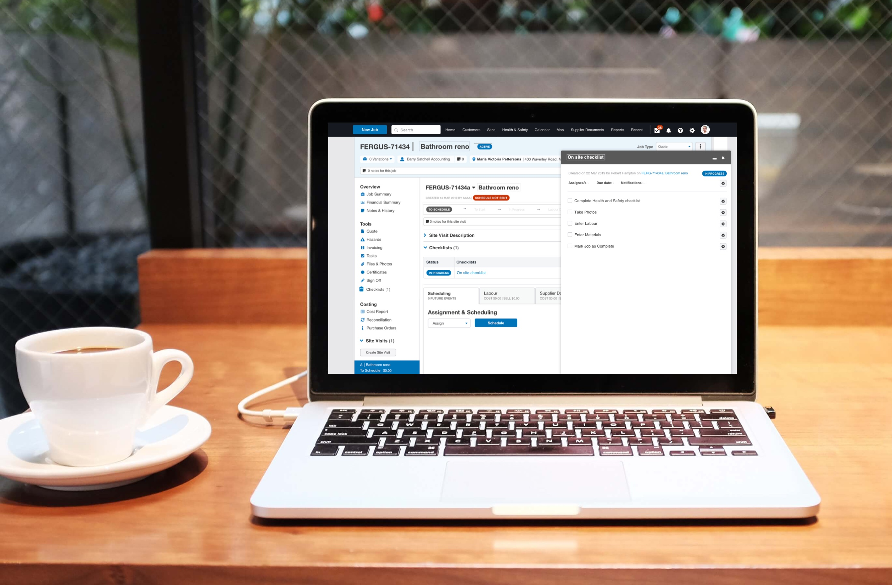
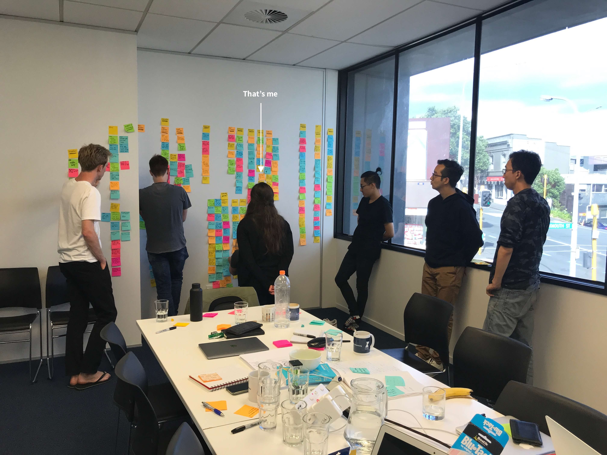
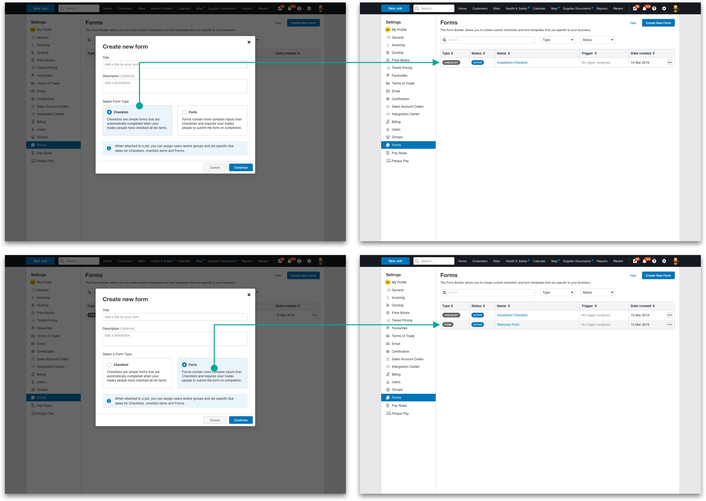
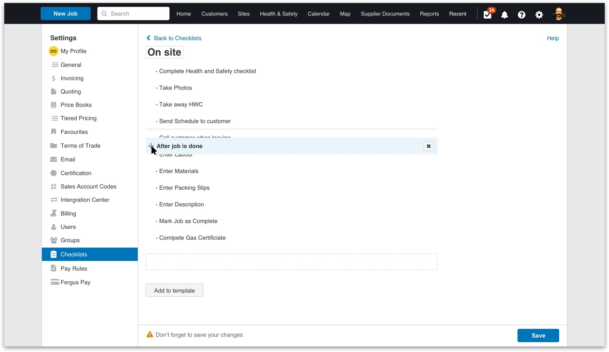
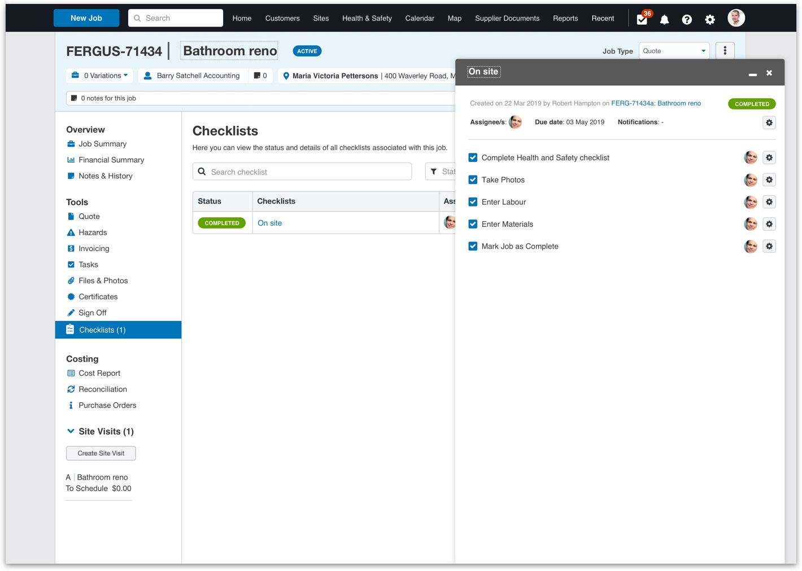
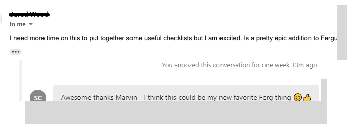

Checklists
Having a successful trades business depends on, among other things, maintaining a certain level of quality in each job. In order to preserve these processes and be effectively followed by employees, a checklist will be sufficient to achieve it.

My position
UX Designer
UX Designer
Team
Product Manager
Senior UX Designer
Head of Product Design
Three Developers
QA Professional
Product Manager
Senior UX Designer
Head of Product Design
Three Developers
QA Professional
My role
Ideation
Wireframing
Visual Design
Interaction Design
User Research
Ideation
Wireframing
Visual Design
Interaction Design
User Research
Year
2019
2019
The context
Fergus is a job management software for trade businesses. Its objective is to help business owners simplify their job by providing full visibility and control over the ongoing state of work.
It was the end of February 2019 when my manager told me that I was going to start working on an interesting project. As he started explaining it briefly, I realised that it was going to be really fun and challenging, as it was the first big project I was assigned to at Fergus.
I quickly got the idea of what was needed, so I started to mock things up as soon as I could. There were a lot of unknowns, but I manage to get a rough idea of its purpose. And this is how this story begins.
The problem
Although Fergus has a big set of features, there were two missing:
- Checklists: are meant to provide the staff with predefined actions or tasks following internal processes to ensure that they are doing the job with the quality that is expected.
- Forms: compliance is really important for trades companies, mostly for australian customers, and having the ability to gather data is crucial.
The need of these functionalities had two benefits, one for the customer and one for the business:
- Less paper: Fergus customers are still having piles of paper at their desks. Their idea of using the software is precisely to decrease the amount of physical documents and have everything in one single place.
- Conversion: by implementing these features, Fergus will gain user conversions, a better position against the competition and obviously improve the stack of options it offers.
My role
I was an active member during this project from day one. I was responsible for wireframing, prototyping and defining the interaction design alongside the Head of Product Design. I participated in the 5 days Design Sprint that took place at the very beginning. I also helped write the tasks and attended usability testing sessions carried out by a Senior UX Designer. During the whole process I wrote design specs for developers and support them while implementing it. Finally, I provided design feedback over the testing period.
Design sprint
There were a lot of questions around which was the best approach for checklists and forms:
- Are them part of the same feature or they are different?
- Do we want to attach checklists and forms to every object inside Fergus?
- Are there different categories?
- Do they trigger other actions when completed?
At this point, there were a lot of assumptions and unknowns, so a Design Sprint (created by Google Ventures in 2010) was scheduled.
The group attending was integrated by members of different departments within Fergus, from the product, support, marketing and design team. We sat down on a meeting room from Monday to Friday in order to answer all the questions we had.

Design Sprint - day 2: Analysing how-might-we questions
At the end of the week, we managed to test the prototype both internal and externally - two sales representatives from Fergus and two real users. The feedback showed us that we were on the right track but that we should investigate more in some very specific aspects.
Just checklists
During April, our main focus was to generate a solution that covers most of the must-have that the Product Manager and the Head of Product Design defined. But from every meeting we had, we always got to the same point: are forms and checklists part of the same feature?. A user story mapping session was immediately scheduled as soon as these undefined questions began to block our work. As a result, we were finally able to reach a very good understanding and therefore a good justification to separate them.
Checklist are meant to establish procedures to be replicated across the jobs, whilst forms are destined to gather information for different purposes. This new approach also marked a clear line between the two functionalities and it was possible to reach to something that makes sense from all points of view.
A new beginning

Mock-ups from the Design Sprint
Having achieved this well thought out distinction between functionalities felt like a new beginning of the project. So, at this stage, all the team was able to start focusing in the final solution: checklists.
Working together
In my case, I worked hard to have a prototype so we can test this approach, while the engineering team began thinking of the end architecture. Alongside this, we started doing weekly stand-ups to share the progress made by each team member. This helped us heaps as it put us in the same page at all times.
Usability testing
By the end of March, we had done five usability testing sessions and the feedback obtained was great. Users were very satisfied with what we were proposing. It was then time to focus on the end attributes and the first MVP of the project.
Defining the final solution
From April to September was time to iterate until the final version. Yes, it took months, but it makes complete sense due to the level of complexity in the interactions and the fact that we also had to deal with legacy code, user types and its permissions.
Basic workflow and users
The basic and most common workflow consists on the business owner or admin person creating a checklist and a worker at the field completing it. On top of this approach, there were management requirements, such as the capability of assigning the whole and/or each task to an employee or group.

Template builder
Panel concept
Another interesting fact of this solution is the panel concept. Users sometimes need to check information from different places at the same time, so it became useful the idea of the checklist in an overlay panel while navigating through pages in the background.

Checklist attached to a job
Mobile app
It was mandatory to have access to this feature through the mobile app. This way, the employees will be able to follow and complete the assigned tasks.

Checklists on the mobile app
The results
Once the engineers had an almost ready prototype, a beta testing period was programmed. Around 10 users got early access to the feature and tested it. The feedback was as expected, questions about the last functionalities that were being implemented during this trial. We also did a short survey in order to know the general feeling, and it was very good.

User feedback
We finally launched checklists on October 2019. The adoption rate was good, X% of the total accounts enabled checklists. But the job is not finished yet, we have more iterations to make.
Takeaways
It may sound obvious, but I found really helpful having everything well defined after so many unknowns. Trying to design without limitations can become especially hard sometimes.
Lastly, the weekly catch-ups with the team made everything so easy! No one felt lost or blocked during the process as we were permanently working side by side.